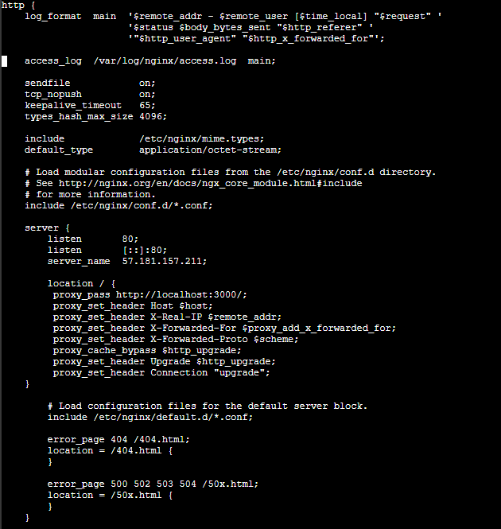
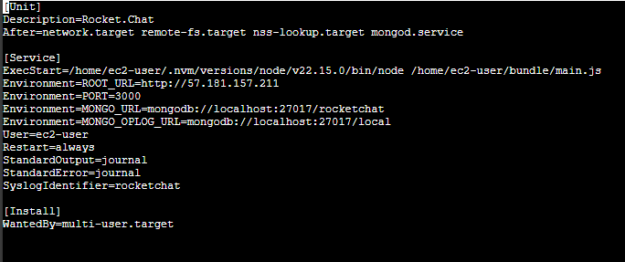
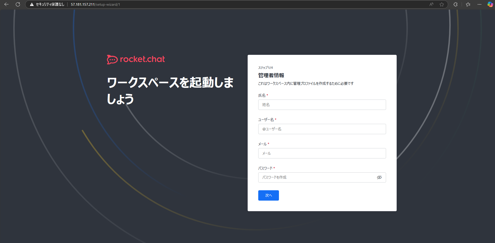
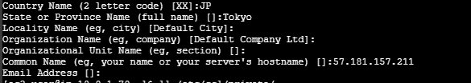
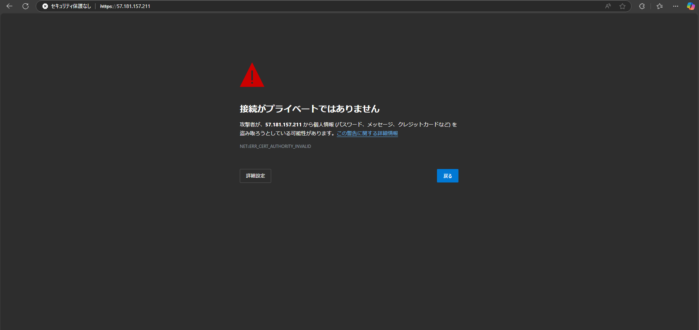

Rocket Chatの導入手順¶
MongoDBのインストール¶
cd /etc/yum.repos.d/
sudo nano mongodb-org-8.0.repo
cd
sudo yum install -y mongodb-org
sudo systemctl start mongod
sudo systemctl status mongod
sudo systemctl enable mongod
sudo systemctl restart mongod
node.jsのインストール¶
curl -sL https://rpm.nodesource.com/setup_14.x | sudo bash -
curl -o- https://raw.githubusercontent.com/nvm-sh/nvm/v0.39.7/install.sh | bash
source ~/.bashrc
nvm install --lts
node -e "console.log('Running Node.js ' + process.version)"
Rocket Chatのインストール¶
curl -L https://releases.rocket.chat/latest/download -o rocket.chat.tgz
tar -xvzf rocket.chat.tgz
cd bundle/programs/server
npm install
Webサーバ（NGINX）のインストールと設定¶
sudo yum install -y nginx
sudo systemctl start nginx
sudo systemctl enable nginx
sudo systemctl status nginx でactive（runnning）となっていることを確認
sudo nano /etc/nginx/nginx.conf 設定ファイルに以下を追記
http通信をnginxで受けて、Rocket Chatに転送するように設定。

sudo nginx -t で設定の再読み込み
sudo systemctl restart nginx
RocketChatの環境変数の設定¶
export ROOT_URL=http://57.181.157.211
export PORT=3000
export MONGO_URL=mongodb://localhost:27017/rocketchat
export MONGO_OPLOG_URL=mongodb://localhost:27017/local
sudo nano /etc/systemd/system/rocketchat.service
以下を記載（再起動時にも環境変数が反映されるように）

sudo systemctl daemon-reload
sudo systemctl restart rocketchat
sudo systemctl status rocketchat
NGINXの設定テストと再起動を実施後、http://57.181.157.211でRocket Chatにアクセスが成功

HTPS通信実施のための設定¶
sudo openssl req -x509 -nodes -days 365 -newkey rsa:2048 -keyout /etc/ssl/private/nginx-selfsigned.key -out /etc/ssl/certs/nginx-selfsigned.crt
以下を入力

sudo nano /etc/nginx/nginx.conf
HTTPS通信を処理するためにNGINXの設定ファイルに以下を記載

sudo nginx -t
sudo systemctl restart nginx

HTTPS通信で暗号化を実施することができていない。
→